Introduction to ATAC-seq Analysis Pipeline
Understanding the fundamentals of ATAC-seq data analysis pipeline and the key steps involved.
Understanding the fundamentals of ATAC-seq data analysis pipeline and the key steps involved.
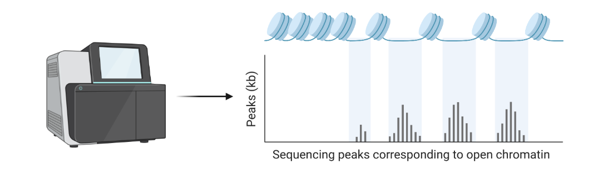
Organizing your project and data in a way that is easy to understand and reproduce.
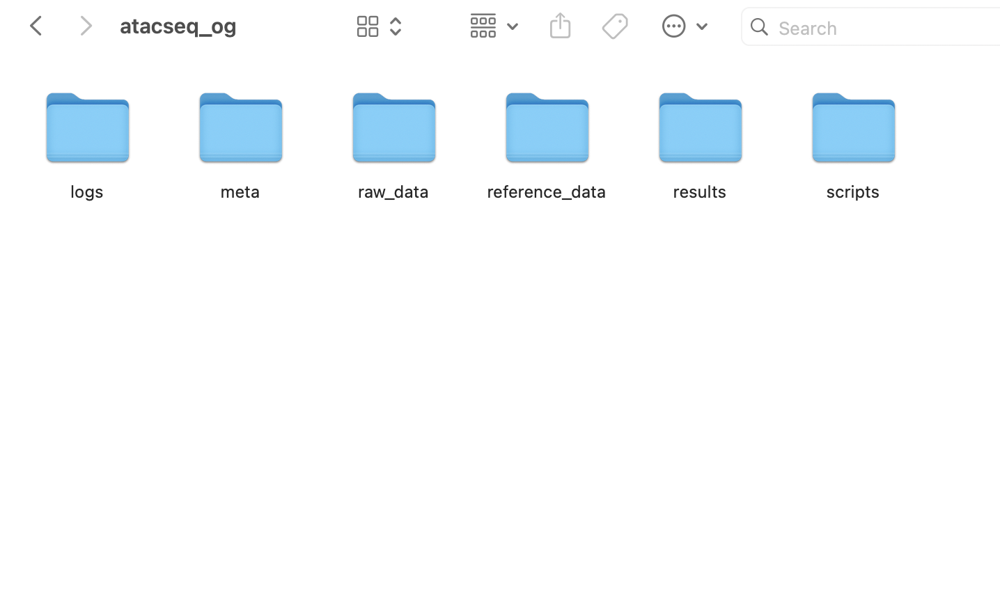
Installing Miniconda, configuring Bioconda, and creating isolated environments to manage bioinformatics tools reproducibly.
Retrieving raw sequencing data, creating digital aliquots with seqtk, and running FastQC to assess read quality before downstream analysis.
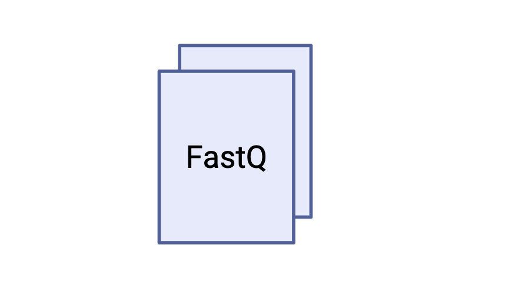
Interpreting the results of the FASTQC quality control report.
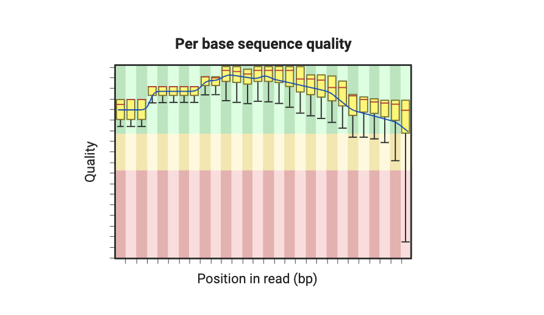
Removing adapter sequences and low-quality bases from your sequencing data to prepare it for downstream analysis.
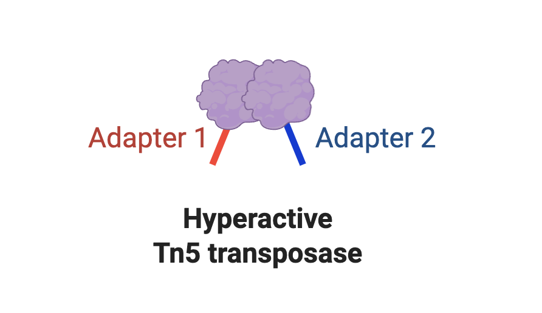
Mapping your sequencing data to the reference genome to identify the locations of your reads.
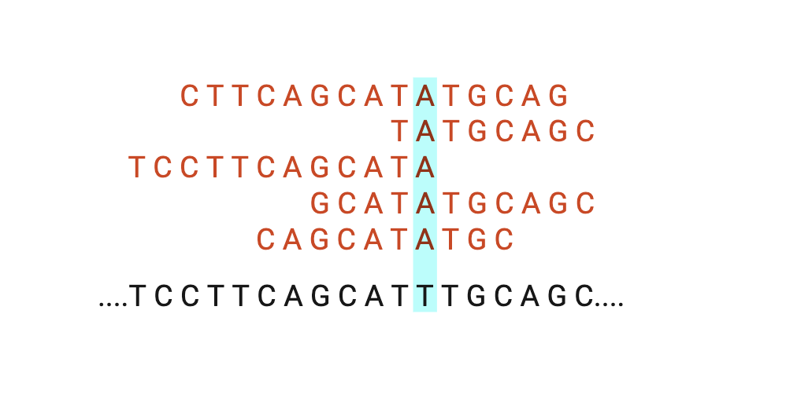
Identifying open chromatin regions in your sequencing data to understand the regulatory elements in the genome.
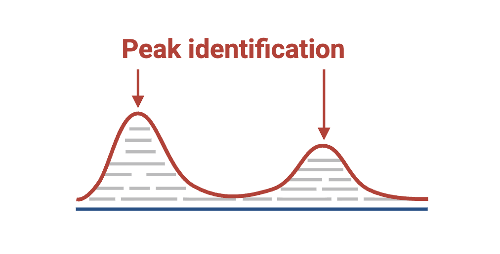
Converting raw alignment data into a compressed BigWig coverage track using bedtools and visualizing genomic signal in a genome browser.
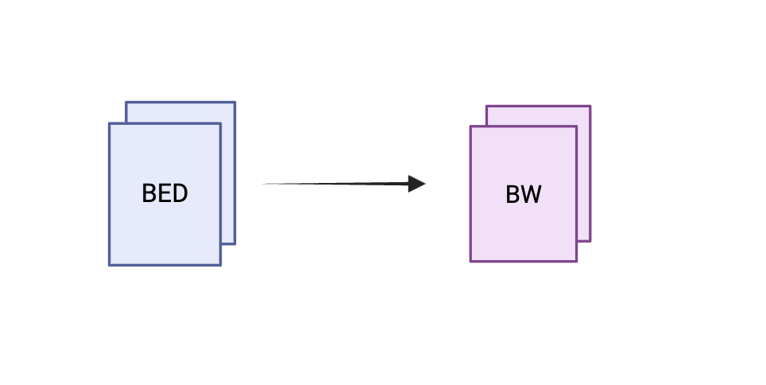
Navigating the IGV Web App to visualize signal tracks and peak calls, and performing a visual sanity check on your ATAC-seq results.
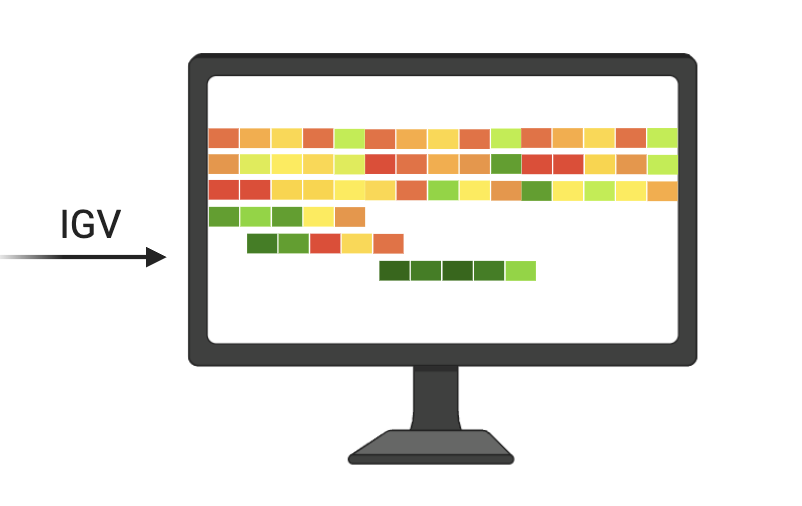
Interrogating the narrowPeak file with basic terminal commands to decode every column, count and rank peaks by statistical strength, and build biological intuition about your data.
Preparing and submitting peaks to the GREAT web tool, interpreting genomic annotations and pathway enrichment to understand whether open chromatin regions fall at promoters, enhancers, or intergenic regions.
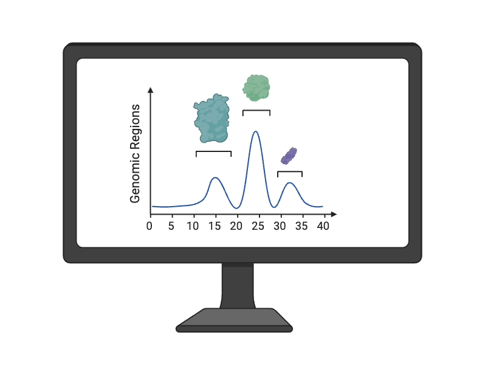
Extracting peak sequences with bedtools getfasta, submitting them to MEME Suite AME for transcription factor motif enrichment, and interpreting which transcription factors are driving chromatin accessibility in monocytes.
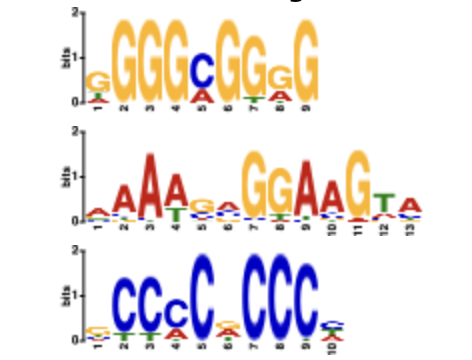